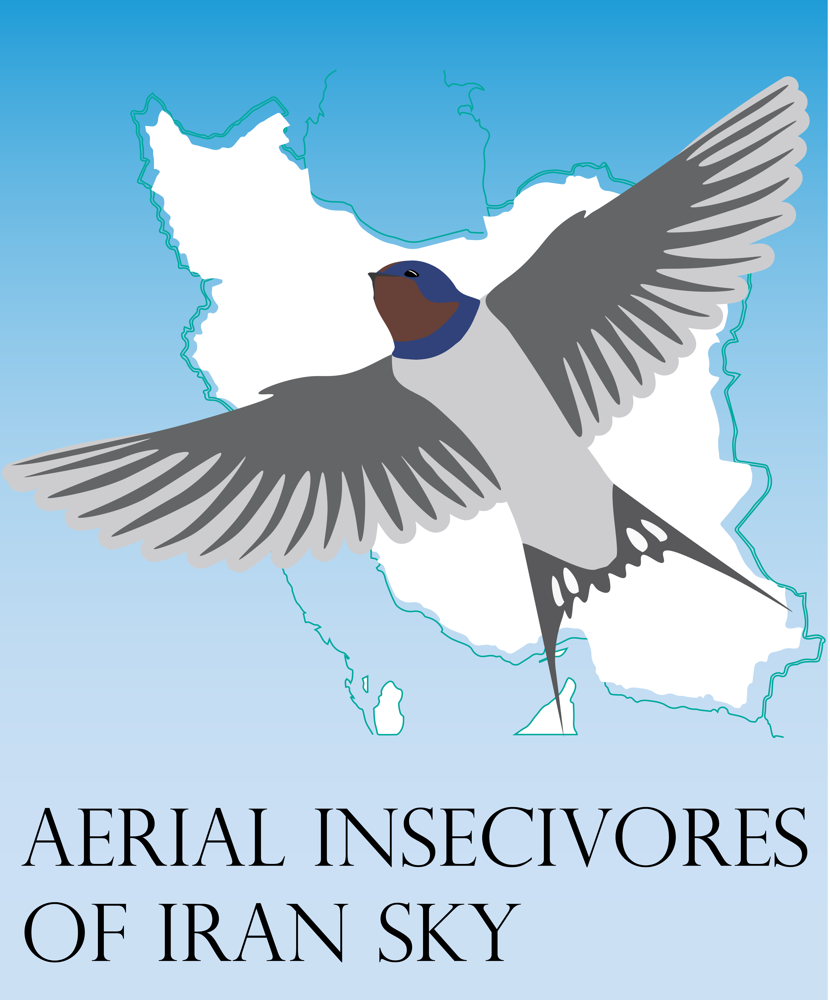

About The Project

Mission of this website
This decline in aerial insectivores has become a major concern for ecologists and conservationists, as these birds play a crucial role in maintaining the balance of ecosystems. The decline of aerial insectivores is a complex issue that requires urgent attention from the public and policymakers. The goal of this website is to provide information on the causes of the decline of aerial insectivores, its ecological implications, and what we can do to help. Through this website, we aim to raise awareness and promote action to conserve these vital birds.
Over the past few decades, there has been a significant decline in
the populations of aerial insectivores worldwide. According to a
study published in PLOS ONE, populations of aerial insectivores
have declined by 76% in the last 27 years in Canada alone (DeSante
et al., 2015). Similar trends have been observed in other regions
of the world, including Europe and the United States (Inger et
al., 2019).
Causes of Decline:
Habitat loss and degradation: One of the primary causes of the decline of aerial insectivores is habitat loss and degradation. The destruction of natural habitats, such as wetlands and grasslands, has led to the loss of breeding and feeding grounds for these birds. Additionally, the use of pesticides and fertilizers in agriculture has contaminated the food sources of aerial insectivores, leading to a decline in their populations.Climate change: Climate change is another significant factor contributing to the decline of aerial insectivores. Changes in temperature and rainfall patterns have altered the timing and abundance of insect populations, making it difficult for birds to find enough food during their breeding season.
Collisions with human-made structures: Another cause of the decline of aerial insectivores is collisions with human-made structures, such as buildings and wind turbines. These structures pose a significant threat to birds, causing injury or death and reducing the overall population.
Ecological Implications
The decline of aerial insectivores has significant ecological implications. These birds play a crucial role in controlling insect populations, which can have a cascading effect on the entire ecosystem. Without enough aerial insectivores, insect populations can grow unchecked, leading to damage to crops and natural habitats. Additionally, the loss of these birds can impact other species that rely on them as a food source, disrupting the delicate balance of the ecosystem. Conclusion: In conclusion, the decline of aerial insectivores is a complex issue with multiple causes, including habitat loss and degradation, climate change, and collisions with human-made structures. The ecological implications of this decline are significant, affecting the balance and health of entire ecosystems. It is imperative that we take action to address these issues and protect the populations of aerial insectivores before it is too late.Sources:
DeSante, D. F., et al. (2015). Continental-scale decreases in shorebird populations in North America. PLOS ONE, 10(7), e0130768.
Inger, R., et al. (2019). Declines in insectivorous birds are associated with high neonicotinoid concentrations. Nature, 1(1), 1-8.